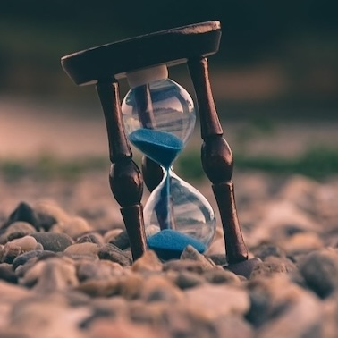

Having Patience while Knitting
Date: May 5th 2026

In today’s world, we are constantly on the move and always moving on to the next thing. Every weekday is filled with work or classes while every weekend is filled with plans. After graduating, I have noticed how future-oriented I am and how that has affected my mental health. This year, I realized that I want to live more in the present and that knitting will help me do so.
With my current WIP of the Summer Vines Vest, the main thing that I’m learning is patience. Knitting is a tedious and slow hobby that sometimes requires breaking down patterns like with the design chart or restarting when you make mistakes. For this WIP, I had to restart the right front panel because I accidentally dropped a bunch of stitches when I picked up my yarn.
Lastly, knitting sometimes requires you to be patient with yourself and accept that not every project will be perfect. At the end of the day, this is an art form where you are handmaking clothing pieces. While it would be great to get every stitch at the perfect tension and every row at the perfect count, this WIP has taught me to accept that my first try might look a little wonky.
When I feel myself getting frustrated with this WIP, I put the yarn down and take a break. Because at the end of the day, knitting is a fun, slow hobby that is rewarding once you finish the piece! Thanks for reading and leave your thoughts below!